Explore Assisi
A Brief History
Assisi was an Umbrian and Roman town before Francis renounced wealth here in the early thirteenth century, founding the Franciscan order whose basilica now crowns the slope below the Rocca Maggiore. Giotto's fresco cycles and pilgrims' hostels followed, making the city a centre of mendicant spirituality recognised by the papacy. Medieval towers, the Temple of Minerva façade, and hilltop fortifications record layers beneath the saint's influence on Catholic reform and Italian art.
Attractions Map
Top Sights & Activities
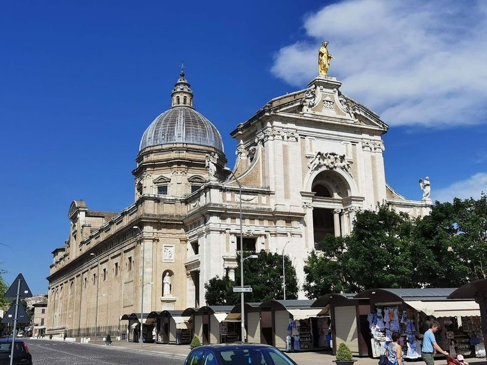
Basilica di Santa Maria degli Angeli
Basilica di Santa Maria degli Angeli is a vast 16th-century church located about 4km beneath Assisi. It houses the Porziuncola chapel, where St Francis started the Franciscan movement. The nearby Cappella del Transito marks the site of St Francis's death. The basilica also features Michelangelo's Cloister, which displays over 400 works of art including sculptures and reliefs.
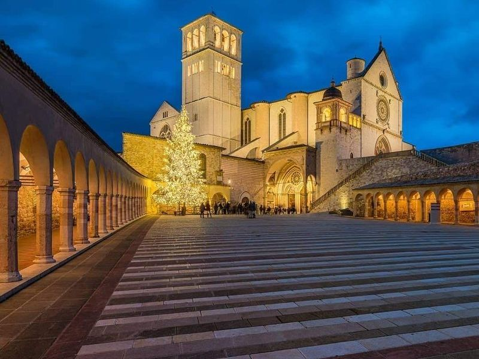
Papal Basilica and Sacred Convent of Saint Francis in Assisi
The Papal Basilica and Sacred Convent of Saint Francis in Assisi is an Gothic church and a major Christian pilgrimage site. This UNESCO World Heritage Site consists of the Upper Basilica and the Lower Basilica, adorned with medieval art. The basilica also features smaller chapels like those dedicated to St Mary Magdalene and St Louis of Toulouse. It's recommended to use an audio guide to explore the rich history behind this impressive structure.
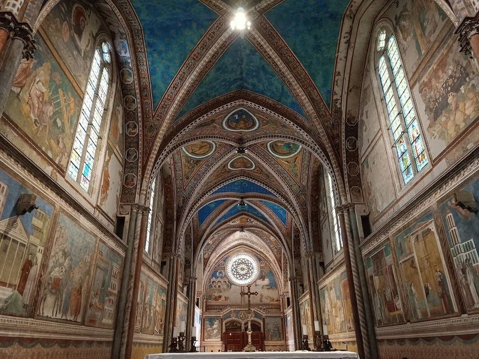
Basilica Superiore di San Francesco d'Assisi
The Basilica superiore di San Francesco d'Assisi is a grand 13th-century complex consisting of two churches. The Gothic Basilica Superiore houses the famous cycle of Giotto depicting the life of St. Francis, while the older Basilica Inferiore preserves works by Cimabue, Pietro Lorenzetti, and Simone Martini.
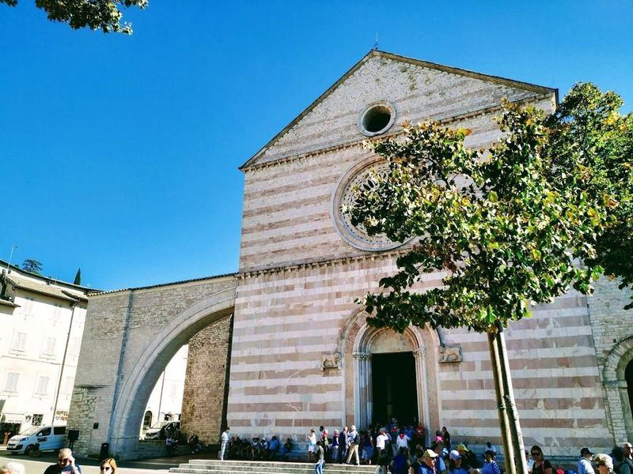
Basilica of Saint Clare
Basilica di Santa Chiara is a 13th-century church in Assisi, Italy, featuring a striking pink-and-white facade. It was built to honor St. Clare shortly after her burial in 1253 and was consecrated in 1265 by Pope Clement IV. The basilica houses the tomb of St. Clare and also preserves the Crucifix of San Damiano, which spoke to St. Francis.
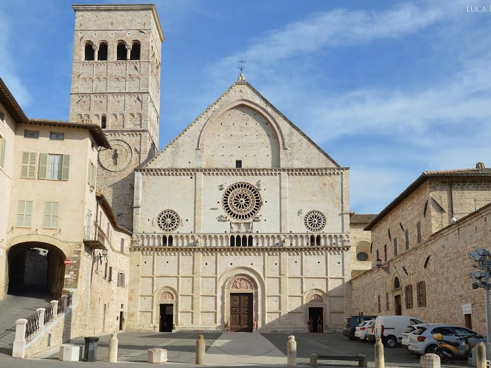
Cathedral of San Rufino
The Cathedral of San Rufino is a 13th-century church located in Assisi, Italy. It is divided into two main churches, the Lower and Upper basilicas. The interior features ornate friezes, statues, and numerous chapels such as those dedicated to St. Mary Magdalene and St. Louis of Toulouse. The cathedral has an unmistakable Romanesque character with modern features added during the 16th century.
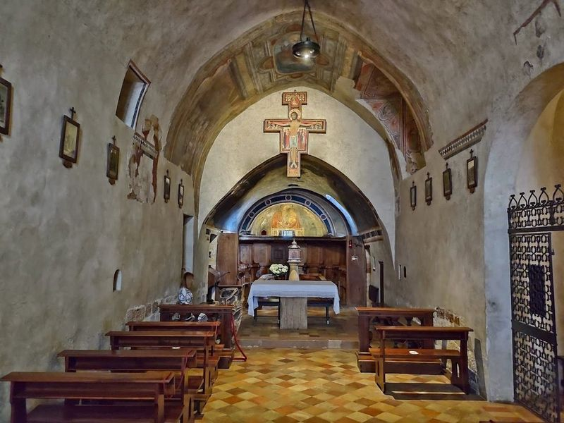
San Damiano
San Damiano is a 12th-century church and cloisters located in Assisi, surrounded by terraced olive groves. It holds great significance as the place where St. Francis received a message from God to rebuild his house. This sanctuary embodies the virtues and values of St. Francis, representing an important part of his life.
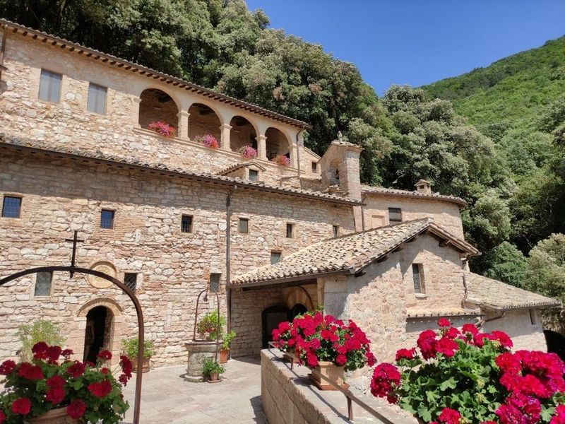
Eremo delle Carceri
Eremo delle Carceri is a 13th-century hermitage and oratory located in the wooded hills near Assisi, Italy. This site holds great significance as it was a place of prayer and retreat for St. Francis, the Patron Saint of Italy. The hermitage is situated about 4 km east of Assisi, surrounded by dense woods against Monte Subasio. It remains unchanged since St.
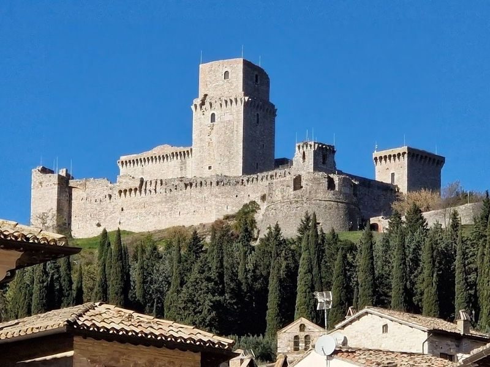
Rocca Maggiore
Rocca Maggiore is a grand medieval fortress that has loomed over Assisi for over 800 years. The castle offers panoramic views and houses historical artifacts. Nearby, travellers can explore the Roman Amphitheatre, now a public garden, and the Basilica di Santa Chiara, where St. Clare of Assisi is buried. Eremo dell Carceri, a serene monastery nestled in the trees just outside of town, provides another peaceful retreat.
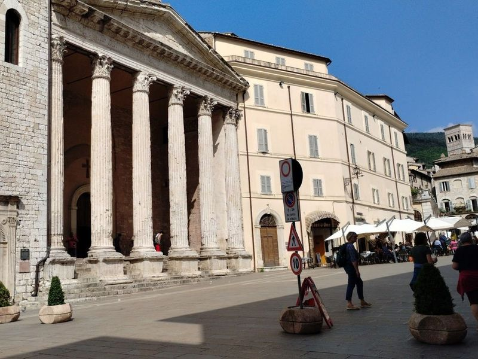
Church of Santa Maria sopra Minerva in Assisi
The Church of Santa Maria sopra Minerva in Assisi is a 14th-century Gothic-style church that was built from a former Greek temple, the Temple of Minerva. The church still retains the facade of the ancient temple, which dates back to the 1st century BC. Located in Piazza del Comune, this historic site also houses Roman remains near the altar and offers access to the ancient forum below through the nearby Civic Museum.
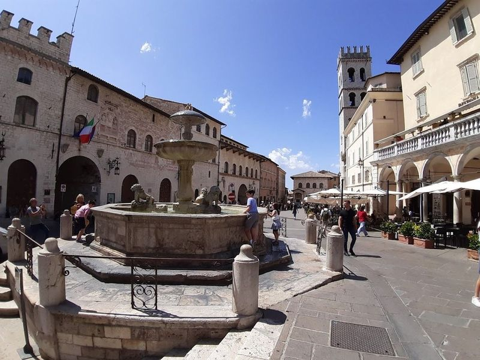
Piazza del Comune
Piazza del Comune in Assisi is a historic square that dates back to Roman times and flourished as a bustling trade center during the Middle Ages. The square boasts an array of remarkable monuments, including the ancient Roman Temple of Minerva, which has been transformed into a church, the Fountain of the Lions, and the tabernacle. travellers can soak up the atmosphere by sitting on the stone steps of the Temple of Minerva while indulging in some gelato and observing local life.
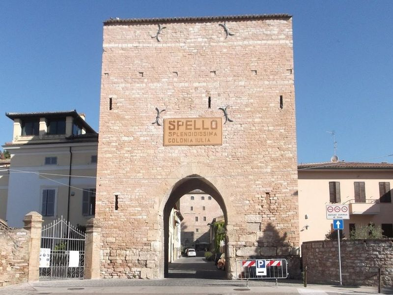
Porta Consolare
Porta Consolare is the main entrance to Spello, a hill town in Umbria. The ancient gate is flanked by a medieval tower with a centuries-old olive tree on top, which has been a symbol of the community for thousands of years. The town offers views over the Umbrian plain from its old town and is filled with historical and cultural charm.
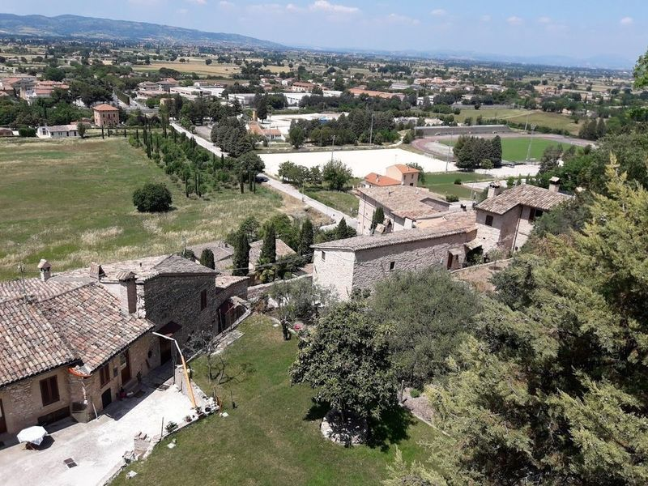
Venus' Gate
Venus' Gate, also known as Porta Venere, is a significant historical site in Spello. The town's dense population led to its division into three districts: the Terzieri of Pusterola, Mezota, and Porta Chiusa. The gate is part of the town walls and dates back to the Augustan era. travellers can admire the Roman architecture and explore the well-preserved city gates.
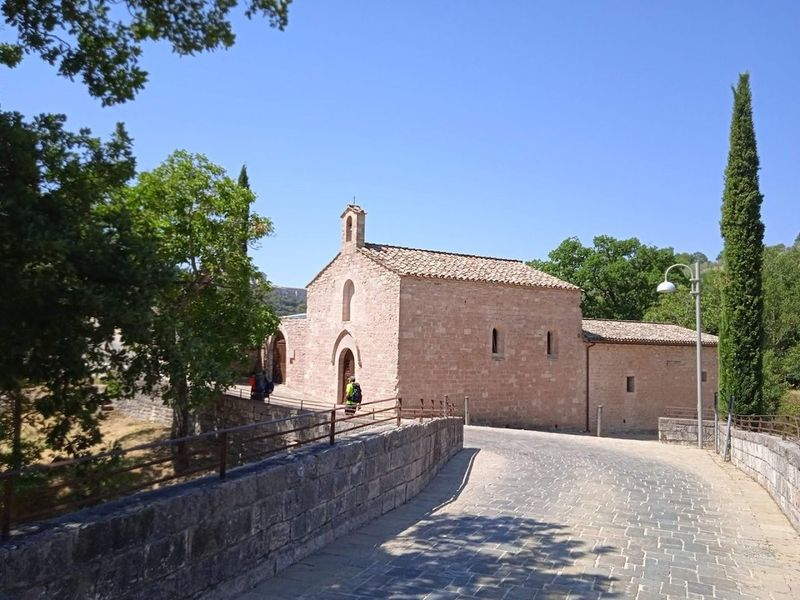
Bosco di San Francesco
Bosco di San Francesco, managed by the Italian National Trust (FAI), is a serene woodland area near the Basilica of St. Francis in Umbria. Covering about 64 hectares, it offers travellers a chance to explore ancient woodlands, olive groves, and walk along the Tescio River on a network of trails.
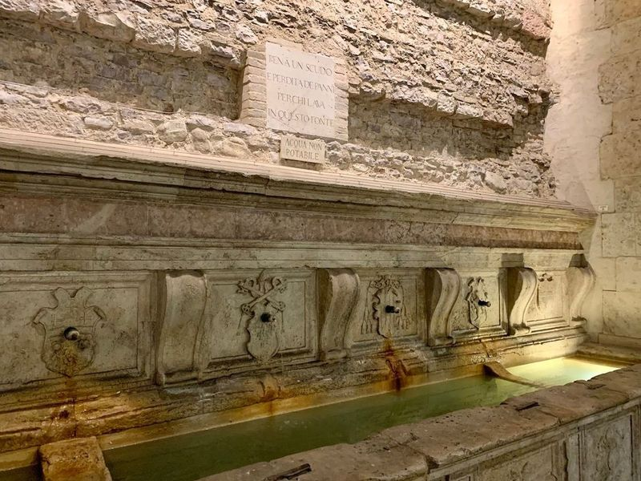
Portico of Monte Frumentario
The Portico of Monte Frumentario in Assisi is a must-visit spot, offering a glimpse into the enchanting world of Santa Claus and his elves. The area boasts ancient architecture and picturesque landscapes that showcase the beauty of Umbria. travellers can take leisurely strolls, savor coffee with views, and immerse themselves in the fascinating history of this village.